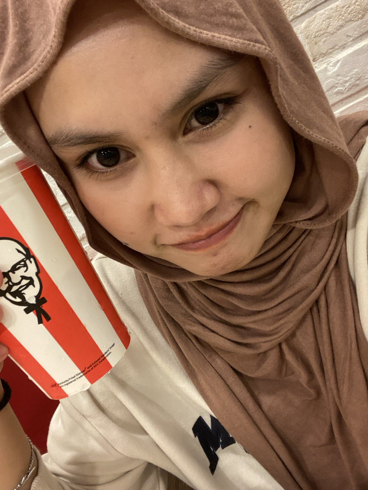
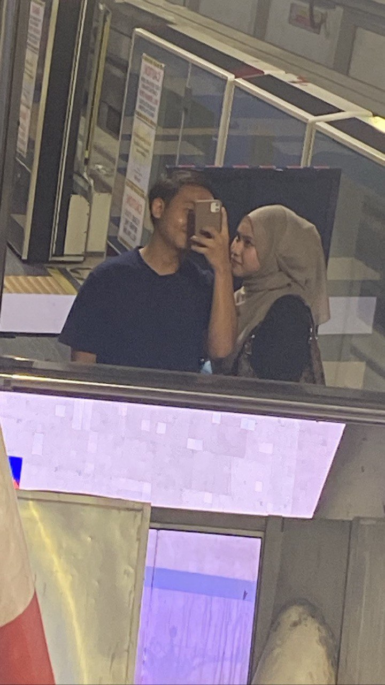
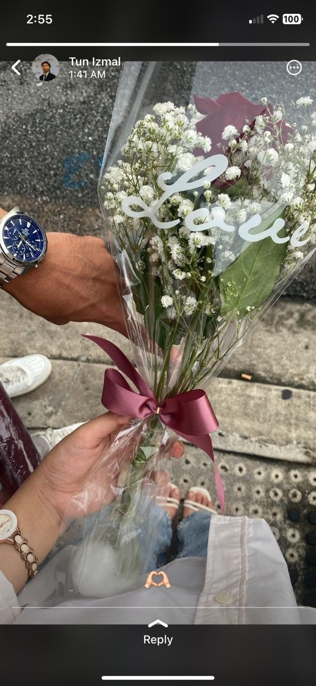

bismillah dan assalammualaikum
kata kata : pertemuan yang singkat tapi tinggal kesan yang teramat dalam

from kawan baik kamu
Hi wanita yang pernah aku jadikan keutamaan pada tahun ini and insan yang pernah ada dengan saya walaupun masa singkat sebelum berakhirnya tahun 2023 ni saya nak ucapkan terima kasih sebab pernah singgah dalam hidup saya walaupun tak lama and sempat membuat saya bahagia juga,tahun ni tahun snagat istimewa bagi saya disebabkan kehadiran perempuan yang saya snagat sayang seorang perempuan yang saya sayang kagumi iaitu Nur Farisha, untuk awak semoga awak sihat selalu jadi anak yang soleh jadi perempuan yang sentiasa jaga diri sebaiknya daripada perkara ii buruk yang cuba memanfaatkan awak,saya tulis ni sebab saya nak minta maaf kalau ada salah silap saya kat awak apa yang saya penah buat kat awak dari awal kita kenal sampai hujungnya pada 19 November lepas saya bukan orang yang baik saya bukan lelaki yang baik awak pon tahu kan saya macam mana? Saya jauh dari kata baik sebannrnya mungkin awal perkenalan kita saya nampak baik but at the end of put story awak kenal saya saya ni tak baik sangat,saya minta maaf kalau terkasar bahasa ngan awak kalau termarah awak kalau buat benda buruk kat awak saya minta maaf Hmm saya rasa bersalah sebab saya tak pandai nak jaga awak sejak saya kenal awak Hmm but saya sentiasa berusaha untuk jadikan awak sebagai keutamaan saya selalu ,sampai sekarang pon saya masih Care pasal awak cuma saya tak tahu jelah apa awak buat sekarang awak sekarang dengan sapa awak baik ii jeke ha itulah saya cuma kawan yang perhatikan awak dari jauh walaupun saya masih kagumi awak Hmm terima kasih sebab hadir dalam hidup saya awak banyak ajar saya benda ii yang selama ni saya tak tahu dalam dunia ni,awak orang hebat awak berjaya buatkan saya tak tertarik dengan sesiapa pon
even kita dah jadi stranger masa saya terlampau patah hati atau sudah mati rasa dengan perempuan in the past 2 years saya rasa saya hanya jadi orang yang dihargai sebab keberadaan saya , mungkin dengan awak ni patahnya hati tidak main ii paling sakit dalam sejarah hidup saya, but paling bahagia juga dalam hidup saya masa kita bahagia dulu? but now semua tinggal kenangan je,benda yang saya takut akan terjadi pon dah jadi saya taknak hilamg sesiapa but saya hilang awak orang yang paling penting dalam hidup saya but now i have to learn hidup tanpa awak walaupun mmg berat kadang ii teringat awak saya menitik sendiri,mungkin sebba saya terlampau cintakan awak,saya sentiasa cuba nak jadi yang terbaik kat mata awak but saya selalu gagal kita selalu gaduh selalu lag communication selalu buat awak sakit hati but apa yang awak nak tahu saya sentiasa cuba nak jadi yang terbaik and buat awak proud to have me but i still cant be good for you,sakit ni masih terasa hangat dia mmg saya akan pulih agak lama dari sebelum ini tanpa melibatkan sesiapa tanpa melibatkan orang yang cuba dekat dengan saya,terima kasih pernah ada walaupun orang yang saya sayang dah takde gambar dia masih elok dalam Galleri saya nama dia masih ada barang yang awak penah bagi sentiasa saya pakai setiap hari chat kita selalu saya baca but itu semua kenangan kan there is nothing ,end apa yang saya nak rangkumkan dari kisah kita saya hanya orang yang awak hargai disebabkan keberadaan saya selalu dengan awak i never been loved with you dengan ikhlas im just lelaki yang ada time susah senang awak but untuk awak sayang saya rasa a big no but When we a far saya just kawan baik awak☺️saya sayang awak as your best friend sampai sekarang saya masih risaukan apa yang jadi kat awak and saya masih ingin tahu apa aktiviti awak but saya perlu sedar diri saya hanya sekarang kawan end if you have someone new yang gantikan tempat saya saya harap dia orang terbaik yang awak jumpa mungkin sakit bagi saya but how can i do i can beat 1000 man wants you but i cant beat 1 men that you want hehe so if you dah selesa dengan sapa ii tolong hargai dia and tolong jaga diri awak sebaiknya okeyy kita mungkin akan lost contact lepas ni saya percaya snagat benda ni akan jadi kalau kita dah lost contact lagi ii kalau awak dah ada someone new kan takkan awak nak chat bgan ex awak lagi kan so block jelah saya kalau awak perlu

nanti saya nak awak tahu awak orang yang paling istimewa saya jumpa and if boleh diundurkan masa saya i wish saya tak pernah pegi cafe makcik untuk keje sana and meet you and my blocker friend sebab keje tu saya kenal awak saya kenalkan awak kat family saya makcik kenalkan awak dekat semua sedara mara saya kat makcik ii saya also and mama awak pon kenal ayah saya dekat abah awak kat family awak yang datang and buatkan saya rasa sedih bila mama awak tanya Farisha tak balik harini kawan dia kena Covid lepastu mama awak cakap aritu balik ngan Farisha kan and mama awak tanya lagi Farisha tak call ke ? The question mmg saya senyum je tak tahu nak jawab apa yelah takkan saya nak cakap Farisha dah block saya pula ? lepastu mama awak macam pelik and sambung buat keje but saya okeyy je but pernah hancur pada bulan 11 but awak orang istimewa Farisha saya sayang awak as your friend kalau ada apa ii just chat me if you want us to lost contact bagitau saya,but saya taknk hilang awak tapi kalau awak nak just inform saya.TERIMA KASIH FARISHA UNTUK SEGALANYA 2023 segala suka duka kita dah lalui sama ii and i wish all the best pada awak and semoga berbahagia with your pilihan sekarang AND TAK SANGKA SECEPAT TU AWAK CARI PENGGANTI SAYA mungkin orang tu dah wujud sejak kita berdua lagi kan and i do believe that ada je awak update apa ii kat status ke or something but hide on me ,so takpelah the day akan tiba juga Samada lambat atau cepat hari itu akan tiba dan jaga diri awak sebaiknya okeyy . Saya minta maaf kalau ayat saya sakitkan awak ke saya ada terkasar bahasa saya tau saya tidak sempurna saya jauh dari kata baik and i hope awak jaga lah dia baik ii okeyy my biggest cintakan awak ialah mengikhlaskan pemergian awak untuk bersama dengan dia .The truth is, I have fallen in love with you. Dan bila kita cintakan seseorang tu, yang paling kita takuti adalah sekiranya orang tu meninggalkan kita. The fear of losing you at that time, I could not explain it with words. I just couldn't….".BERBAHAGIALAH DENGAN PILIHAN KAMU YANG BARU MUNGKIN THAT PERSON WHO BLOCK ME TU KOT tapi takpelah asal akan kamu bahagia and nampak lah kamu ceria sekarang Hehehe ASSALAMMUALAIKUM from kawan awak ✨
 